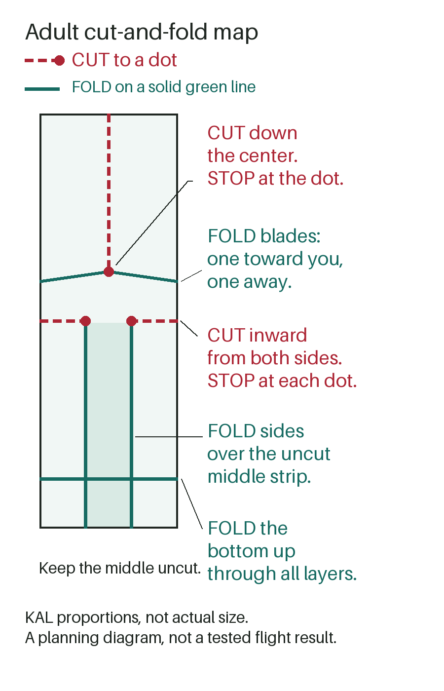

Fold | drop | notice
Paper Helicopter for Kids
Will folded paper turn as it falls? An adult prepares the model; your child can release it or watch.
Before you start
Get: ordinary paper, pencil and adult-controlled scissors. A ruler helps; no printer, clips or added weights.
Adult: mark, cut and fold using the map below. Clear a landing space away from faces, feet and younger children's reach.
Child: follow a release-not-throw demonstration. Say, "Let go and watch." The adult can do the releasing instead.
Stop: if paper is mouthed, thrown toward people, scraps or scissors become accessible, or close supervision cannot continue. Stay on the floor; no climbing.
Research-backed, not family-tested by Kid Activity Lab. Readiness and adult control matter more than an age label.
Adult preparation: three cuts, then folds
Start with a rectangle about three times as tall as wide. With a ruler, use 7 cm wide by 21 cm tall. Keep it upright. These are KAL's suggested proportions, not NASA measurements or a flight-tested design.
- Mark before cutting. Put a dot halfway across the width, 8 cm below the top. Draw a center cut line from the top to this dot. Draw a shallow sloping fold from the dot to each outside edge, ending 8.5 cm below the top.
- Mark the lower body. Halfway down the rectangle, draw a cut inward from each side through its outer third only. Leave the middle third uncut. From each cut endpoint draw a fold straight down to the bottom. Mark a base fold 2.5 cm above the bottom.
- Make the three cuts. Cut down to the top dot, then inward to the two side endpoints. Do not connect the side cuts or extend the top cut into the body.
- Fold the blades oppositely. On their sloping lines, bend one blade toward you and the other away, roughly a quarter-turn. They should stick out on opposite sides of the upright body, not lie flat against it.
- Fold the body. Fold both lower side panels inward over the middle strip, one over the other. Fold the bottom up through all layers. Put scissors and scraps away before the child handles the model.
No ruler? Mark by halving the gaps
Use the short edge of an ordinary A4 or Letter sheet as the rectangle's height; estimate a width one-third as long. Use a spare straight paper edge to draw lines. Light edge pinches can locate halfway marks without creasing the whole model.
- Find halfway down. Find halfway between the top and that level, then halfway between this new level and the original halfway mark. Put the center dot there.
- Between the dot's level and the halfway level, halve the gap, then halve it again toward the dot. Put the two outside ends of the sloping folds at this level.
- At halfway down, estimate three equal widths for the two side-cut endpoints. Mark the base fold by halving the bottom half, then halving its lowest section again.
This approximates the map; it is not an assurance that marking differences will work. If the marks remain confusing, pause rather than guess a cut.

Let go and watch
The adult checks the folds, holds the lower body with the blades above it, and releases over the clear landing area without a push or twist. Keep both feet on the floor. Notice turning, fluttering or falling straight down; none is a required result.
Invite one child to try while you stay beside them. Retrieve the model together before another release. A seated child can watch an adult release or try from a reachable height; lower drops may look different. Stop whenever continuing is unwanted.
If it does not turn
Adult check: are the blades folded in opposite directions and free to move? Are both side panels folded in and the base folded up? Is the middle body still joined? Reset those folds and try one more release with the same paper and height.
If the body is cut through, start with a fresh blank; do not patch it with clips or weights. If the model still does not turn, end the trial or compare what it did. Do not climb higher to force a result. These checks are suggestions, not guaranteed repairs.
One change, or finish here
For another experiment, the adult can fold the base up once more. Keep the paper and release height the same and ask, "What changed?" No stopwatch, race or written record is needed.
Keep preparation materials with the adult during mixed-age play. Offer watching or choosing the next try instead of handling small scraps. Collect the model and every offcut when finished. Preparation time, play duration and cleanup effort have not been measured.
Sources and limits
NASA JPL's paper helicopter project and its worksheet geometry, checked September 19, 2026, supply the folded-body approach and base-fold comparison. We omit elevated drops, clips and classroom measurement tasks. This falling paper model is not powered flight.
KAL's proportions, no-ruler marking route, adult/child roles, recovery and stop wording are editorial adaptations. The CPSC Art and Craft Safety Guide, checked September 18, informs general supervision and tool control; it does not certify this activity.
No family or physical flight test by KAL is recorded. Rotation, marking tolerance, comprehension, enjoyment, learning, repeatability, mess and safety outcomes are unknown. Ordinary paper is the default; cardstock and tissue are not established equivalents.